K-Mean Clustering Dataset XCLARA¶
Pendahuluan¶
K-means merupakan salah satu algoritma clustering. Tujuan algoritma ini yaitu untuk membagi data menjadi beberapa kelompok. Algoritma ini menerima masukan berupa data tanpa label kelas.
Hal ini berbeda dengan supervised learning yang menerima masukan berupa vektor (x1 , y1) , (x2 , y2) , …, (xi , yi), di mana xi merupakan data dari suatu data pelatihan dan yi merupakan label kelas untuk xi.
Pada algoritma pembelajaran ini, komputer mengelompokkan sendiri data-data yang menjadi masukannya tanpa mengetahui terlebih dulu target kelasnya. Pembelajaran ini termasuk dalam unsupervised learning. Masukan yang diterima adalah data atau objek dan K(banyak) kelompok (cluster) yang diinginkan. Algoritma ini akan mengelompokkan data atau objek ke dalam k buah kelompok tersebut. Pada setiap cluster terdapat titik pusat (centroid) yang merepresentasikan cluster tersebut.
K-means ditemukan oleh beberapa orang yaitu Lloyd (1957, 1982), Forgey (1965) , Friedman and Rubin (1967) , and McQueen (1967). Ide dari clustering pertama kali ditemukan oleh Lloyd pada tahun 1957, namun hal tersebut baru dipublikasi pada tahun 1982.
Pada tahun 1965, Forgey juga mempublikasi teknik yang sama sehingga terkadang dikenal sebagai Lloyd-Forgy pada beberapa sumber.
Kelebihan dan Kekurangan¶
Kelebihan :¶
- Mudah untuk diimplementasikan dan dijalankan.
- Waktu yang dibutuhkan untuk menjalankan pembelajaran ini relatif cepat.
- Udah untuk diadaptasi.
- Umum digunakan.
Kekurangan :¶
- Sebelum algoritma dijalankan, k buah titik diinisialisasi secara random sehingga pengelompokkan data yang dihasilkan dapat berbeda-beda. Jika nilai random untuk inisialisasi kurang baik, maka pengelompokkan yang dihasilkan pun menjadi kurang optimal.
- Dapat terjebak dalam masalah yang disebut curse of dimensionality. Hal ini dapat terjadi jika data pelatihan memiliki dimensi yang sangat tinggi (Contoh jika data pelatihan terdiri dari 2 atribut maka dimensinya adalah 2 dimensi. Namun jika ada 20 atribut, maka akan ada 20 dimensi). Salah satu cara kerja algoritma ini adalah mencari jarak terdekat antara k buah titik dengan titik lainnya. Jika mencari jarak antar titik pada 2 dimensi, masih mudah dilakukan. Namun bagaimana mencari jarak antar titik jika terdapat 20 dimensi. Hal ini akan menjadi sulit.
- Jika hanya terdapat beberapa titik sampel data, maka cukup mudah untuk menghitung dan mencari titik terdekat dengan k titik yang diinisialisasi secara random. Namun jika terdapat banyak sekali titik data (misalnya satu milyar buah data), maka perhitungan dan pencarian titik terdekat akan membutuhkan waktu yang lama. Proses tersebut dapat dipercepat, namun dibutuhkan struktur data yang lebih rumit seperti kD-Tree atau hashing.
Pengaplikasian Dalam Kehidupan Nyata¶
Pengelompokan adalah bertujuan menghasilkan kelompok-kelompok yang terdiri dari objek-objek dengan karakteristik yang serupa, seperti halnya manusia mengelompokkan objek-objek.
- pengaplikasi di Bidang Biologi
K-means dapat digunakan untuk mengelompokkan gen berdasarkan polanya[5]. Hal ini diperlukan untuk menemukan gen yang memiliki fungsi serupa.
- pengaplikasi di Bidang Bisnis
K-means dapat digunakan untuk melakukan segementasi pasar. Segementasi pasar adalah pengelompokan pelanggan sesuai karakteristik mereka (misalnya: gaya hidup, kebutuhan). K-means juga dapat digunakan dalam sistem pemberi rekomendasi untuk mengelompokkan objek-objek yang saling terkait.
- pengaplikasi di Bidang pencarian Informasi
K-means dapat digunakan untuk mengelompokkan dokumen sehingga memudahkan pencarian dokumen berdasarkan topiknya.
Agoritma K-Mean¶
Algoritma untuk melakukan K-Means clustering adalah sebagai berikut:
- Pilih K buah titik centroid secara acak
- Kelompokkan data sehingga terbentuk K buah cluster dengan titik centroid dari setiap cluster merupakan titik centroid yang telah dipilih sebelumnya
- Perbaharui nilai titik centroid
- Ulangi langkah 2 dan 3 sampai nilai dari titik centroid tidak lagi berubah
Contoh Kasus Perhitungan K-Means Clustering Sederhana¶
Ditentukan banyaknya cluster yang dibentuk dua (k=2). Banyaknya cluster harus lebih kecil dari pada banyaknya data (k<n).
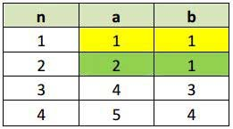
Contoh data set
Inisialisasi centroid dataset pada tabel dataset diatas adalah C1 = {1 , 1} dan C2 = {2 , 1}. Inisialiasasi centroid dapat ditentukan secara manual ataupun random.
Untuk pengulangan berikutnya (pengulangan ke-1 sampai selesai), centroid baru dihitung dengan menghitung nilai rata-rata data pada setiap cluster. Jika centroid baru berbeda dengan centroid sebelumnya, maka proses dilanjutkan ke langkah berikutnya. Namun jika centroid yang baru dihitung sama dengan centroid sebelumnya, maka proses clustering selesai.
Rumus yang digunaka untuk menghitung distance space atau jarak data dengan centroid menggunakan Euclidiean Distance.
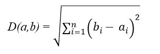
Persamaan Euclidean Distance
Pengulangan ke-1
Jarak data dengan Centroid C1 adalah:
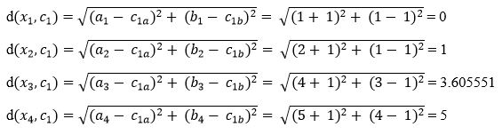
Jarak data dengan Centroid C2 adalah:
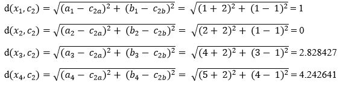
Untuk seterusnya, hitung jarak pada setiap baris data, dan hasilnya seperti pada tabel dibawah.
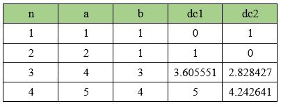
Kelompokan data sesuai dengan cluster-nya, yaitu data yang memiliki jarak terpendek. Contoh; karena d(x1,c1) < d(x1,c2) maka x1 masuk ke dalam cluster 1. Pada tabel diatas, data n=1 masuk ke dalam cluster 1 karena dc1 < dc2, sedangkan n=2,3,4 masuk ke dalam cluster 2 karena dc2 < dc1.
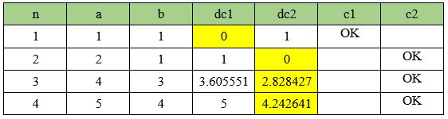
Setelah mendapatkan label cluster untuk masing-masing data n=1,2,3,4 maka dicari nilai rata-ratanya dengan menjumlahkan seluruh anggota masing-masing cluster dan dibagi jumlah anggotanya.
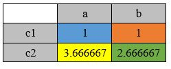
Pengulangan ke-2 : Lakukan kembali dari perhitungan langkah awal dengan Centroid yang baru.
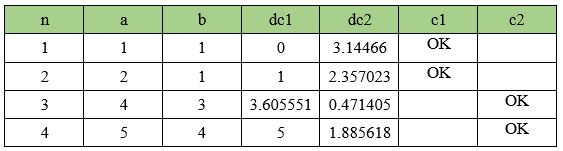
Pengelompokan Data pada Pengulangan ke-2

Nilai Rata-Rata Centroid pada Pengulangan ke-2
Pengulangan ke-3 : Lakukan perhitungan kembali dengan Centroid perulangan ke-2.
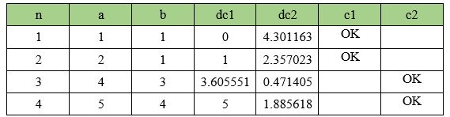
Pengelompokan Data pada Pengulangan ke-3
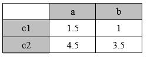
Nilai Rata-Rata Centroid pada Pengulangan ke-3
Karena centroid tidak mengalami perubahan (sama dengan centroid sebelumnya) maka proses clustering selesai. Dan hasil akhir pengelompokannya adalah :
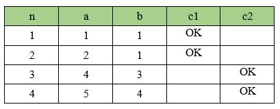
IMPLEMENTASI¶
Untuk editor python menggunakan Jupyter.
PIP yang harus diinstal:
pip install nummpypip install pandasImport Numpy, Panda, Plt, copy :
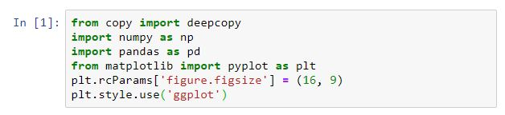
Import data :
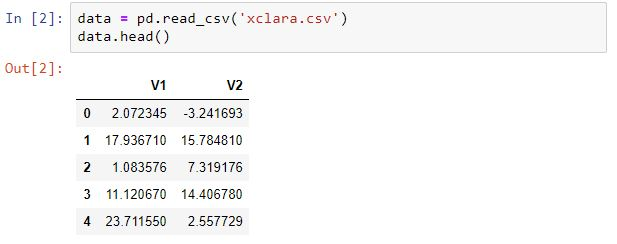
Data dengan program harus difolder yang sama. perintah data.head() untuk menampilkan bagian teratas data saja. Karena terlalu banyak data yang akan di tampilkan. Jika anda ingin menampilkan semua data, anda cuku ketikan "data" tanpa tanda petik dan run .
Mengubah data menjadi array :
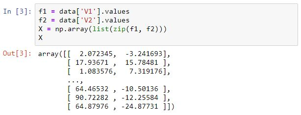
Didalam data Xclara terdapat 2 colom V1 dan V2, saya menggabungkannya dan mengubahnya menjadi array.
Rumus perhitungan jarak :
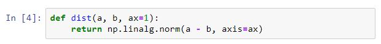
Ini digunakan untuk menghitung jarak dengan centroid terdekat.
Menentukan banyak class atau grub :
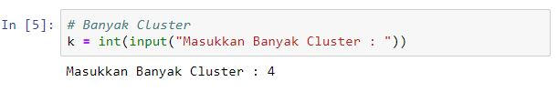
Anda dapat menginputkan berapa jumlah class / grup.
Memilih centroid awal secara random :
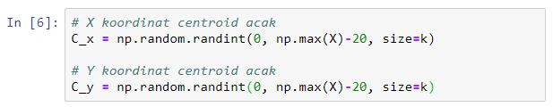
Jadi sebelum mengelompokkan data, Kita harus mencari Centroid awal untuk menjadi acuan awal.
Mengabungkan centroid yang telah didapat dari pencarian random :
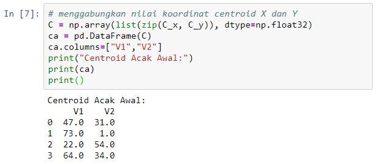
Plot untuk letak Centroid Awal dari kumpulan data :
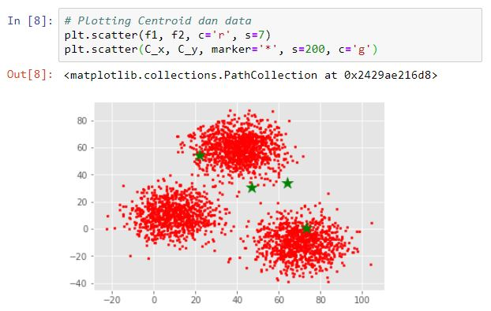
Ini berguna untuk melihat letak awal Centroid dari letak kumpulan data jika diperlukan.
Menghitung jarak dan mengelompokkan data sekaligus mencari Centroid terakhir :
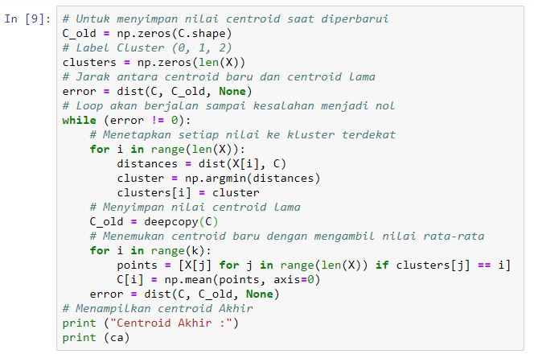
Tahap ini berguna untuk mengelompokkan data dengan centroid awal, setelah pengelompokan selesai selanjutnya mencari centroid terbaru dari data yang telah dikelompokkan. tahap ini dilakukan terus menerus sehingga Centroid terakhir ditemukan / centroid terakhir nilainya sama dengan nilai centroid sebelumnya.
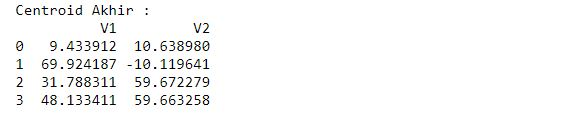
Menampilkan data menurut kelompoknya :
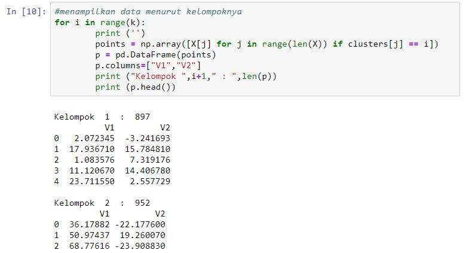
Menampilkan data dari perhitungan jarak terakhir dari centroid terakhir pula dan sebagai hasil akhir K-Mean Cluster. Saya hanya menampilkan 4 bagian data teratas karena data terlalu banyak. Dan untuk mengetahui jumlah data tiap kelompok, anda dapat melihat jumlahnya disamping nama kelompok.
Plot pengelompokan terakhir dan letak centroid terakhir :
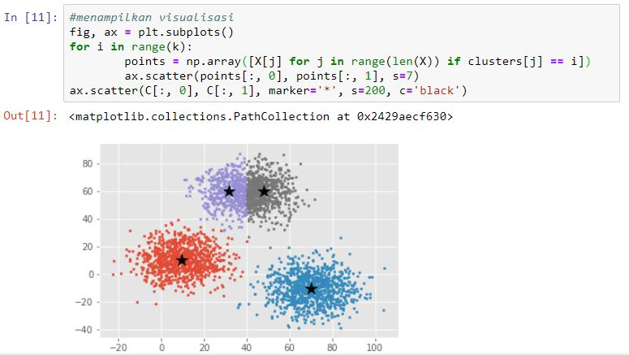
CATATAN : Dataset dan Program bisa didownload dan dilihat DISINI
Referensi¶
- X. Wu and V. Kumar, eds., The Top Ten Algorithms in Data Mining.Chapman and Hall, 2009.
- S. Russell and P. Norvig, Artificial Intelligence A Modern Approach. Upper Saddle River, New Jersey 07458: Pearson Education, Inc., 3 ed., 2010.
- P.-N. Tan, M. Steinbach, and V. Kumar, Introduction to Data Mining, (First Edition). Boston, MA, USA: Addison-Wesley Longman Publishing Co., Inc., 2005.
- O. Maimon and L. Rokach, Data Mining and Knowledge Discovery Handbo- ok. Secaucus, NJ, USA: Springer-Verlag New York, Inc., 2005.
- http://www.epibiostat.ucsf.edu/biostat/
- https://en.wikipedia.org/wiki/K-means%2B%2B
- https://mubaris.com/posts/kmeans-clustering/
- https://www.kaggle.com/andyxie/k-means-clustering-implementation-in-python